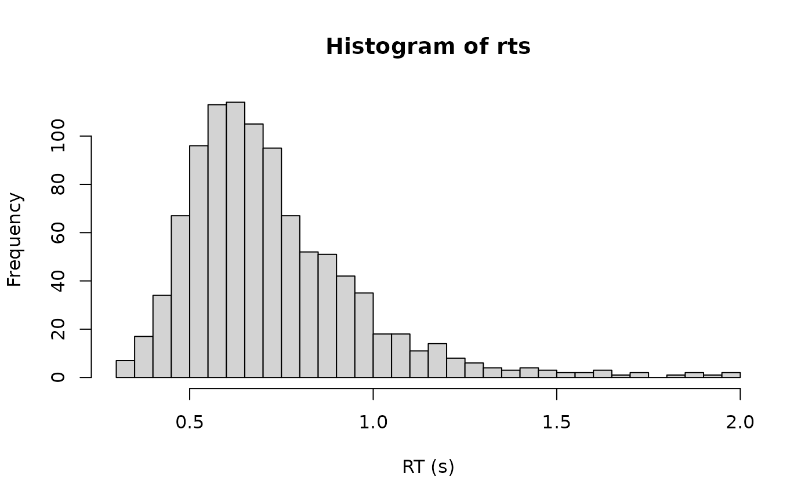

The Generalised Ex-Gaussian of Marmolejo-Ramos et al. (2023): the ex-Gaussian
with one extra shape parameter, obtained by raising its CDF to a power.
$$F_{GEG}(x) = \left[F_{EG}(x)\right]^{shape}$$
so that the density is
$$f_{GEG}(x) = shape \cdot \left[F_{EG}(x)\right]^{shape-1} f_{EG}(x)$$
At shape = 1 this is the ex-Gaussian exactly - not approximately - so
cogmod_exgaussian() is nested inside it and loo_compare() between the two
is like-for-like.
Usage
rcogmod_geg(n, mu = 0.4, sigma = 0.1, tau = 0.2, shape = 1)
dcogmod_geg(x, mu = 0.4, sigma = 0.1, tau = 0.2, shape = 1, log = FALSE)
pcogmod_geg(
q,
mu = 0.4,
sigma = 0.1,
tau = 0.2,
shape = 1,
lower.tail = TRUE,
log.p = FALSE
)
cogmod_geg(
link_mu = "identity",
link_sigma = "softplus",
link_tau = "softplus",
link_shape = "log"
)
cogmod_geg_lpdf_expose()
cogmod_geg_stanvars()
log_lik_cogmod_geg(i, prep)
posterior_predict_cogmod_geg(i, prep, ...)
posterior_epred_cogmod_geg(prep)Arguments
- n
Number of observations. If
length(n) > 1, the length is taken to be the number required.- mu
Location of the Gaussian component. Unbounded. Range: (-Inf, Inf).
- sigma
SD of the Gaussian component. Must be positive. Range: (0, Inf).
- tau
Mean of the exponential component. Must be positive. Range: (0, Inf).
- shape
Power applied to the ex-Gaussian CDF. Must be positive.
shape = 1gives the ex-Gaussian back exactly. Range: (0, Inf).- x
Vector of quantiles (observed reaction times).
- log
Logical; if TRUE, probabilities p are given as log(p).
- q
Vector of quantiles.
- lower.tail
Logical; if TRUE (default), probabilities are
P(X <= q).- log.p
Logical; if TRUE, probabilities are returned on the log scale.
- link_mu, link_sigma, link_tau, link_shape
Character of the type of link used to model the GEG parameters. Defaults to
"identity"formu,"softplus"forsigmaandtau, and"log"forshape.shapeis on aloglink so that zero on the link scale isshape = 1, the ex-Gaussian. A prior centred at zero is then a prior centred on the nested model, which is whatcogmod_priors()supplies.- i, prep
For brms' functions to run: index of the observation and a
brmspreparation object.- ...
Additional arguments.
Value
rcogmod_geg() returns a numeric vector of n simulated reaction
times, in seconds. dcogmod_geg() returns the density at each element of
x - the log density if log = TRUE - and pcogmod_geg() the cumulative
probability at each element of q, honouring lower.tail and log.p;
both are recycled to the length of the longest argument. cogmod_geg()
returns a brms::custom_family object, to put on a brms::bf() formula.
cogmod_geg_stanvars() returns a brms::stanvars object holding the
family's Stan functions block, to pass to brms::brm(), and
cogmod_geg_lpdf_expose() compiles that Stan code and returns it as an R
function, for checking the density outside of a model. The remaining
functions are brms post-processing methods, called by brms rather than
directly: log_lik_cogmod_geg() returns a numeric vector holding one
log-likelihood value per posterior draw for observation i,
posterior_predict_cogmod_geg() a draws x 1 matrix of reaction times
simulated for observation i, and posterior_epred_cogmod_geg() a
draws x observations matrix of expected reaction times, obtained by
numerical integration.
What the shape parameter buys
A wider range of shapes than the ex-Gaussian can reach. Sweeping sigma and
tau across the values RT data occupy, the ex-Gaussian spans skewness 0 to 2
and excess kurtosis 0 to 6; freeing shape widens that to roughly -0.4 to 4.8
and 0 to 35. In particular the GEG can be negatively skewed, which the
ex-Gaussian cannot be at any parameter value.
What it costs
Interpretability, and specifically the one property that makes the ex-Gaussian worth using as a descriptive model.
The mean is no longer
mu + tau. Withmu = 0.4andtau = 0.2, the mean runs 0.31 atshape = 0.2, 0.60 atshape = 1and 1.15 atshape = 20. There is no closed form for it - see posterior_epred() below - and the bulk/tail decomposition that the ex-Gaussian is normally reported for does not survive.shapeis strongly confounded withmu. Fitted by maximum likelihood to the lexical-decision data used in the package vignettes, the correlation between the two at the optimum is about -0.98, and the other estimates move with it: on one conditionmugoes 0.429 to 0.508,sigma0.051 to 0.037 andtau0.119 to 0.162 onceshapeis freed.shapedoes not add an independent axis so much as re-slice the same bulk-and-tail split.
The practical consequence is that cogmod_priors() gives shape a
deliberately informative prior centred on the ex-Gaussian, and that mu,
sigma and tau should not be read as the Gaussian centre, the Gaussian SD
and the mean of the tail once shape is free. If those quantities are the
point of the analysis, fit cogmod_exgaussian() instead. If a better-fitting
descriptive family is the point, cogmod_logstudent() and
cogmod_loggamma() decouple skew from tail weight with parameters that stay
interpretable.
Construction
The power transform is Durrans' alpha-power (or "exponentiated") family, and
for integer shape it is the distribution of the maximum of shape
independent ex-Gaussian draws. That is a mathematical device rather than an
account of a process, so unlike cogmod_invgaussian()'s sigmadrift there is
no mechanism attached to it.
References
Marmolejo-Ramos, F., Barrera-Causil, C., Kuang, S., Fazlali, Z., Wegener, D., Kneib, T., De Bastiani, F., & Martinez-Florez, G. (2023). Generalised exponential-Gaussian distribution: A method for neural reaction time analysis. Cognitive Neurodynamics, 17(1), 221-237. doi:10.1007/s11571-022-09813-2
Durrans, S. R. (1992). Distributions of fractional order statistics in hydrology. Water Resources Research, 28(6), 1649-1655. doi:10.1029/92WR00554
Examples
# shape = 1 is the ex-Gaussian, to machine precision
x <- seq(0.2, 2, length.out = 5)
dcogmod_geg(x, 0.4, 0.1, 0.2, shape = 1)
#> [1] 0.095635579 1.586332904 0.171090592 0.018032816 0.001900645
dcogmod_exgaussian(x, 0.4, 0.1, 0.2)
#> [1] 0.095635579 1.586332904 0.171090592 0.018032816 0.001900645
rts <- rcogmod_geg(1000, mu = 0.4, sigma = 0.1, tau = 0.2, shape = 2)
hist(rts, breaks = 50, xlab = "RT (s)")
